NLP of President Speeches Data using Named Entity Recognition (NER) and Entity Relation Extraction (ERE)
By: Bruke Amare, May 13th 2024
Abstract
This paper presents an NLP project focused on analyzing presidential speeches using Named Entity Recognition (NER) and Entity Relation Extraction (ERE) methodologies. The primary goal is to trace the evolution of mentions of countries, organizations, and key figures within these speeches, providing insights into shifting geopolitical focuses and relationships. Additionally, the study examines the nature of relationships, such as alliances, adversarial positions, and trade partnerships, portrayed between the U.S. and various entities.
The project employs SpaCy for NER to identify and classify entities like people, places, and organizations [Huggingface, n.d.]. For ERE, we analyze the interrelations of these entities, utilizing SpaCy and Pandas to process data extracted from a JSON file containing the speeches, sourced from the University of Virginia's Miller Center data API. This analysis spans both historical and contemporary contexts, aiming to align the findings with current geopolitical realities and shed new light on historical events.
Key findings indicate shifts in the mentions and relationships of entities across different presidential eras, reflecting changes in U.S. foreign policy and international posture. The research also uncovers recurring patterns in how specific countries and organizations have been portrayed, offering a distinctive perspective on presidential speeches throughout history.
In conclusion, this research enhances our understanding of political discourse through NLP, demonstrating the capabilities of these methodologies to extract significant insights from extensive textual datasets. The results not only corroborate established historical narratives but also introduce fresh perspectives on geopolitical and historical dialogues, highlighting the substantial contributions of NLP to political science and historical studies.
Definition
Named Entity Recognition (NER) is a process of identifying and classifying key entities such as people, places,
and organizations within speeches. This could provide a better understanding of the relationships and
geopolitical focuses over time of the subject, in this case the US President's
Entity Relation Extraction (ERE) is a process of using sentiment analysis between entities to understanding how
entities within the speeches are related to each other from the subjects view. This can reveal the nature of the
relationships between countries, organizations, or policies from the perspective of US President's and
inferentially America as well.
Introduction
The analysis of political discourse, especially presidential speeches, gains critical importance in the
context of forthcoming elections. Recently, watching presidential debates sparked my curiosity about
whether candidates mention similar entities as they do in office and how these mentions align with public
perceptions of their political stances. Additionally, my interest in political dynamics, further piqued
by the TV show House of Cards—which delves into political and presidential drama—has driven me to explore
patterns and meanings in presidential speeches.
This study employs NLP techniques such as Named Entity Recognition (NER) and Entity Relation Extraction
(ERE) to analyze U.S. presidential speeches. It aims to uncover the evolution of mentioned entities and
their interrelations, providing insights into the shifting focus of geopolitical discourse and the nature
of the USA's international relationships over time. By visualizing patterns of named entities and
conducting sentiment analysis, I will utilize the UVA Miller Center's comprehensive dataset of
presidential speeches up to 2023.
In attempting to create Entity Relation Extraction (ERE) knowledge maps, I faced challenges
in producing a clear and compelling visualization. I will share the progress made in this area.
This partial visualization is presented not as a finished product
but as an indication of ongoing exploration in this research field.
Goals
The questions I aim to answer include:
1. How have the mentions of different countries, organizations, and key figures changed throughout the
history of presidential speeches?
2. Is there a difference in the entities mentioned by the presidents? If so, how does it affect the
relationship between these entities, and subsequently US's foreign policy and international stance?
3. Can analyses of these speeches relations reveal patterns in how certain countries and organizations
have been portrayed historically?
4. How do relationships, such as alliances, adversarial positions, and trade partnerships, manifest in
these speeches?
Yet because I was unsuccessful in the ERE data visualizations Questions 3 and 4 would have to be put off for
further research.
History
The core dataset is derived from the University of Virginia's Miller Center data API website,
available at [Miller Center ], supplemented by additional
speeches from the Nicole Semerano project at
[Metis-Project-4-Presidential-Speeches-NLP].
This comprehensive dataset encompasses presidential speeches spanning from George Washington's first
inauguration in 1789 to recent addresses concerning Poland in February 2023. The dataset contains 1061 speeches
ready for data processing. Nicole Semerano's examination of presidential speeches, detailed in her article on
[Towards Data Science],
represents a thorough application of NLP techniques to the same dataset of presidential addresses that I am
utilizing. Her approach integrates word frequency analysis, topic modeling, and sentiment analysis to highlight
broad thematic and emotional trends within presidential rhetoric. While Semerano's project provides significant
insights into the evolving oratorical styles of presidents and thematic shifts over time, it primarily focuses on
broader thematic and emotional content, leaving space for more detailed analysis.
the Data
The UVA Miller center dataset is a comprehensive dataset of all speeches made by Presidents, dated and labeled to
each President ordered in terms of date. This dataset is regularly updated and it is even being referenced by
Harvard's database. Right now I am analyzing speeches up to February of 2023 with 1050 speeches and a combination
of about 24 million words.
The data consists of 5 columns:
doc_name : This column contains unique identifiers for the documents, often structured as a combination
of the date and a summary of the event or topic of the speech.
date : The actual date when the speech or remarks were made, typically formatted as YYYY-MM-DD, starting from
1789-04-30 and ending in 2023-02-22
transcript : The full text of the speech or remarks made by the incumbent President, including any formal
salutations, body text, and conclusions.
president : The name of the President who delivered the speech or remarks. This includes all 46 presidents,
from George Washington to Joe Biden.
title : A descriptive title of the speech or remarks, often including the date and a brief indication of the
subject or occasion.
This dataset is simple in columns but vast in rows, there is much to derive from these texts given the variation.
For example, Harry Truman's 1946 State of the Union address, spanning nearly 170 thousand words, standing as the
longest speech. In contrast, George Washington's Second Inauguration delivered the briefest address, comprising of
only 787 words.
Process
The methodology begins with downloading data from the speeches.json file from the Miller Center website
and transforming it into a manipulable Python object. The data is then extracted from its nested JSON
format into a structured pandas DataFrame using pd.json_normalize, assuming the data is a list of records,
by which it can break it down into seperate lists for robust data analysis.
The DataFrame is sorted by the date column to aid in temporal studies. To enrich the dataset, additional
presidential speeches from the Nicole Semerano project are incorporated to fill gaps omitted by the Miller
Center.
During the cleaning phase, meticulous pruning of rows is conducted to eliminate redundancies such as
repeated speeches, thereby enhancing the integrity of the dataset by removing duplicates and irrelevant
data. The methodology concludes with the data being exported to a CSV file. This step not only secures the
processed data for further analysis but also serves as a checkpoint, ensuring data portability for ongoing
use within and potentially beyond this project.
Subsequently, I implement a data analysis workflow using natural language processing for Named Entity
Recognition (NER) with spaCy, alongside data manipulation with pandas, and visualization tools such as
heatmaps and bar charts. I begin by loading presidential speech transcripts from the saved CSV checkpoint
and apply the spaCy en_core_web_sm model to extract and count entities such as locations, organizations,
and names. The specific entities extracted include 'GPE' (Geo-Political Entity), 'ORG' (Organization),
'PERSON', 'NORP' (Nationalities or Religious or Political groups), 'FAC' (Facilities), 'LOC' (Location),
'PRODUCT', 'EVENT', 'WORK_OF_ART', 'LAW', and 'LANGUAGE'. These entities are filtered and structured into a cleaned
DataFrame. I meticulously scanned all unique entities and handpicked those that seemed to relate to a
specific topic or historical event, organizing them into eight groups. These eight groups consist of...
1. World Wars
2. South American Involvements
3. Cold War/Russian Involvements
4. Middle Eastern Involvements
5. Asian Involvements
6. Israel and Palestinian Involvements
7. Minority mentions and Involvements
8. and lastly a soup of non-specific Mentions of Entities that seemed of Interest named as Other Entities
I created visualizations for eight groups to represent the prevalence of entities across years and political
affiliations, providing insights into the data. These visualizations include two bar charts and five heatmaps.
The bar charts are divided into Non-Republican and Non-Democratic categories, each displaying a sum of mentions
for entities associated with those groups. Specifically, the Non-Republican bar chart tallies mentions from
presidents outside the Republican Party, and similarly, the Non-Democratic bar chart counts mentions from
presidents not affiliated with the Democratic Party.
The five heatmaps illustrate the popularity of entity mentions over time, segmented by decades. The first
heatmap is red, highlighting mentions by Non-Republican presidents, while the next heatmap is blue, focusing on
mentions by Non-Democratic presidents. The subsequent three heatmaps are purple, encompassing all presidents.
The initial purple heatmap is presented as described, but the following heatmaps include scaled frequencies to
highlight discrepancies in entity popularity over time. The penultimate heatmap employs MinMax scaling to adjust
the frequency data to a [0, 1] range, and the final heatmap applies standardization, which normalizes the data to
a mean of 0 and a standard deviation of 1.
Standardization is a technique used to transform data to the same scale by adjusting the mean and standard
deviation. This is particularly useful in data analysis and machine learning, allowing for unbiased contributions
from various features regardless of their original units or scales. MinMax scaling, or normalization, also
standardizes features to a specific range, typically [0, 1], making them comparable without distorting the range
of values.
The scaled versions are implemented because they significantly reveal discrepancies between the years when an
entity was most versus least popular. This effect is especially notable in the heatmaps of South American
entities, where the scaled data vividly contrasts periods of high and low popularity.
By linking these data representations below to historical events and trends, you can draw conclusions about
how presidential speeches reflect public perception and policy direction regarding international relations and domestic priorities.
World War Entities
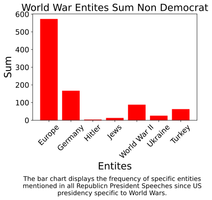
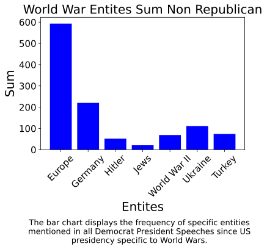


South American Entities

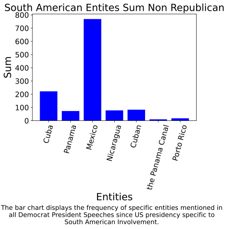
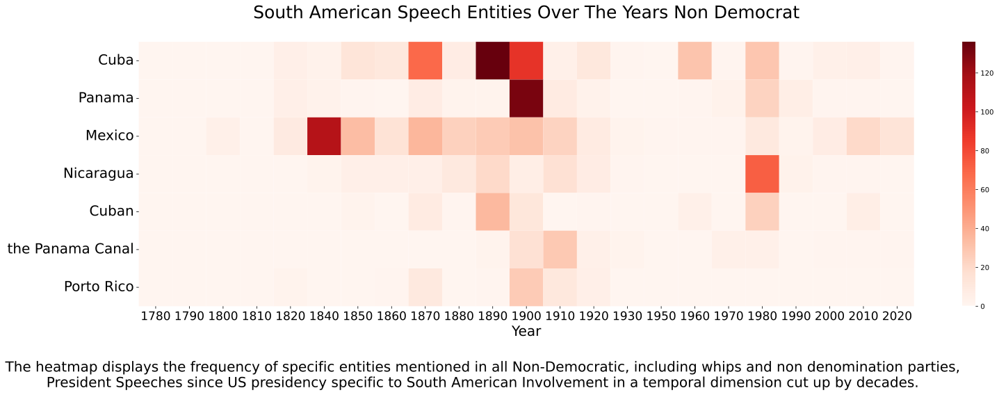


Cold War/Russian Entities

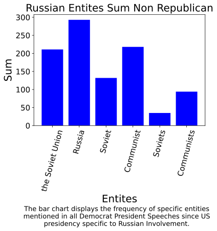


Middle Eastern Entities
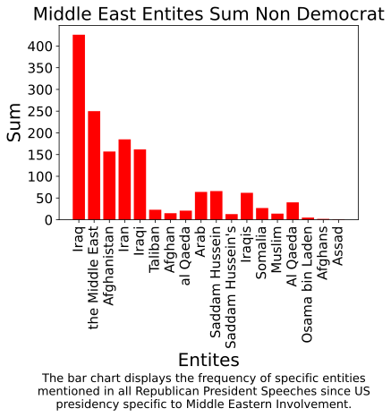
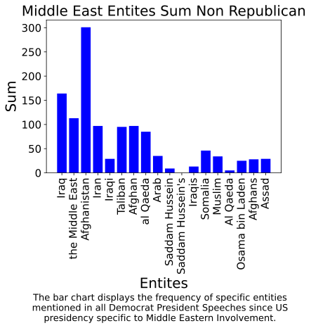


Asian Entities
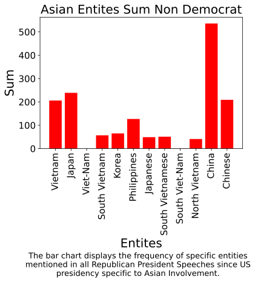
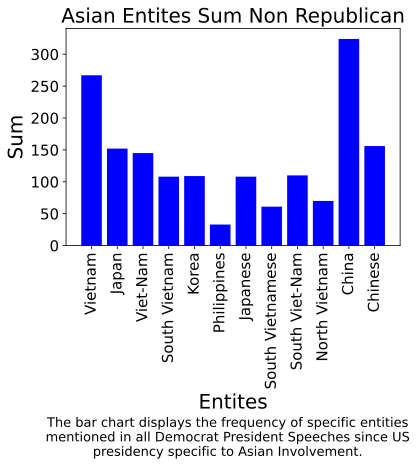


Israel and Palestinian Entities

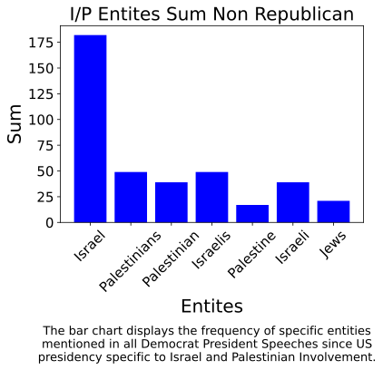

Minority mentions Entities
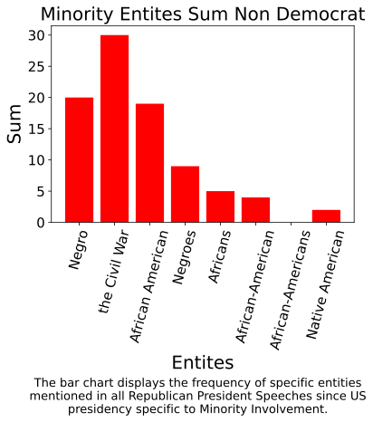
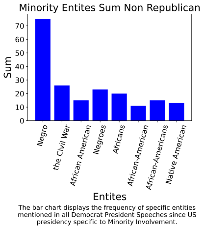
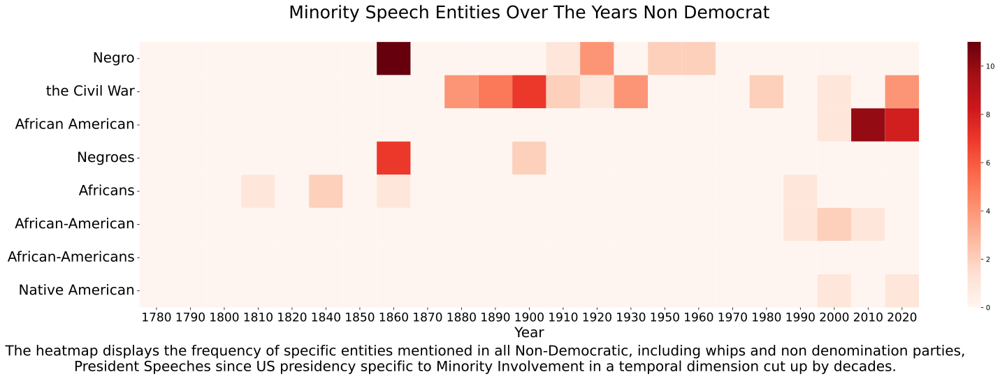


Other Non-Specific Entities

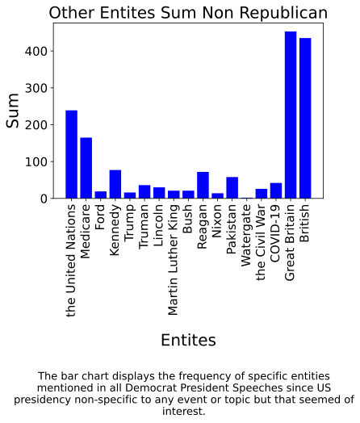
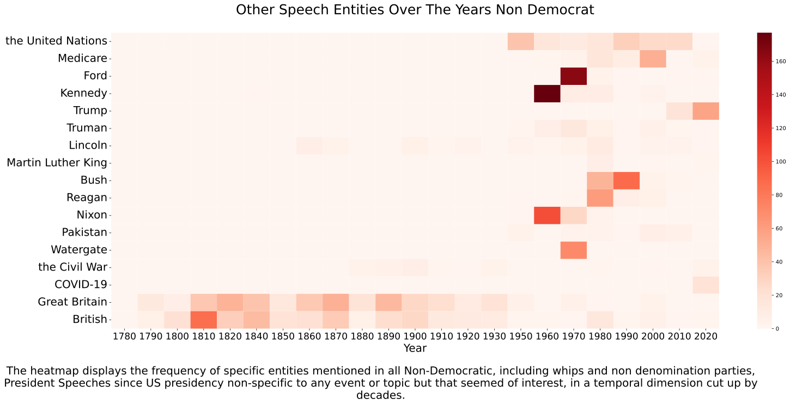

Yet this is not enough even though I divide the mentions of entities by Political party, we have to keep in
mind that political parties have changed their ideologies and political stances over the years
So it would be more informative and insteresting to see the difference in mentions of entities per president
to compare their Recognitions. To do this I picked 3 specific periods of significance in US history.
Those periods are the World War II, Cold War, and Middle Eastern Involvements. So instead of using decades in
the previous heatmaps im using presidents on the x-axis, to show which president said each entities and how
many times they mentioned them during those significant time periods.
For these three time periods I made three heatmaps the first being normal frequency the second being a
Standardized frequency version amd the third being a MinMax Scaled frequencey version.
World War II Entities Case Study
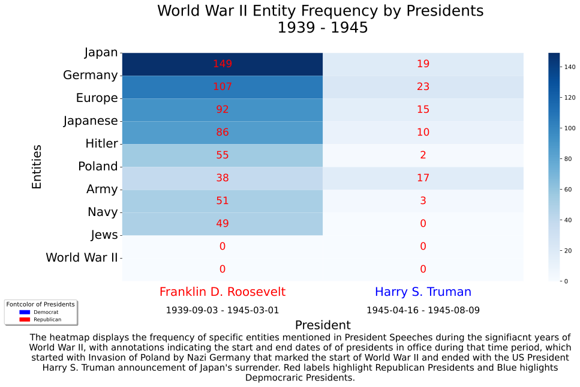
 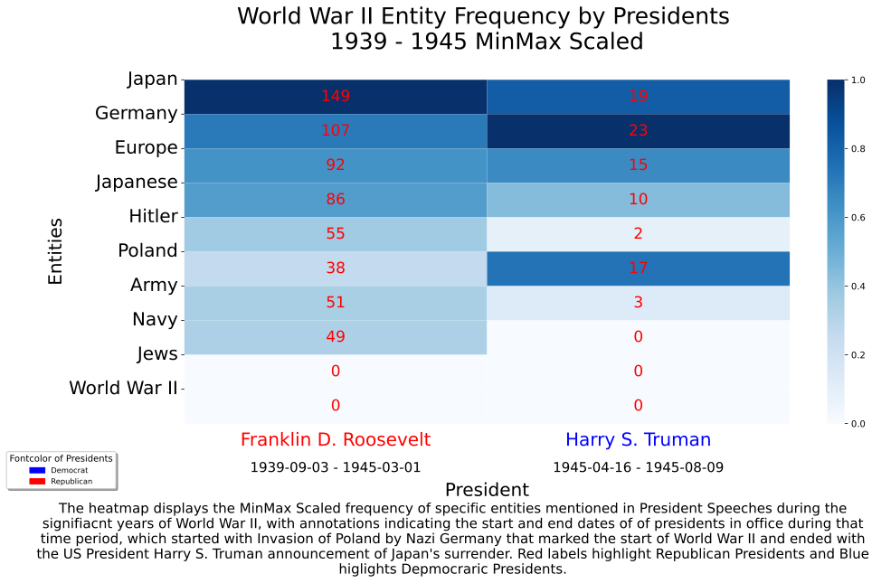
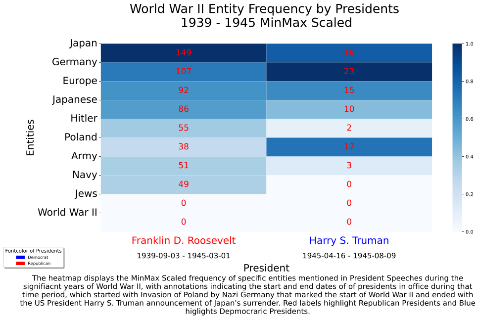
Cold War Entities Case Study
 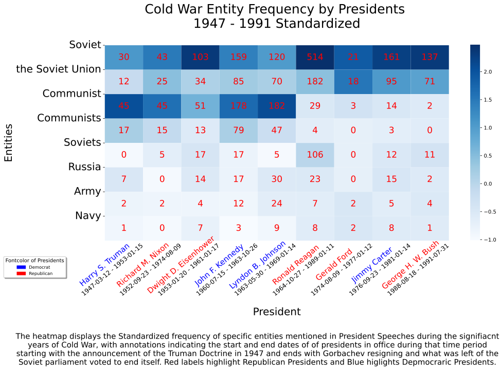
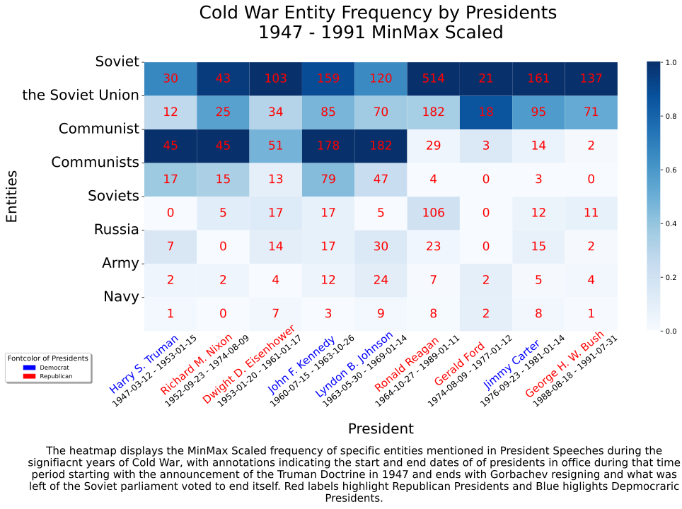
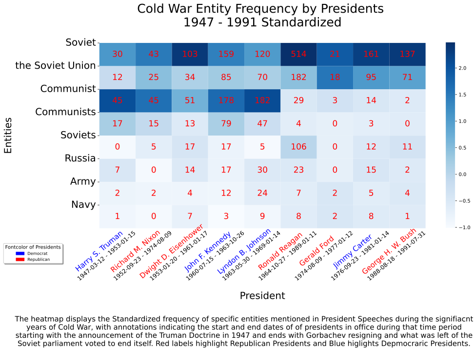
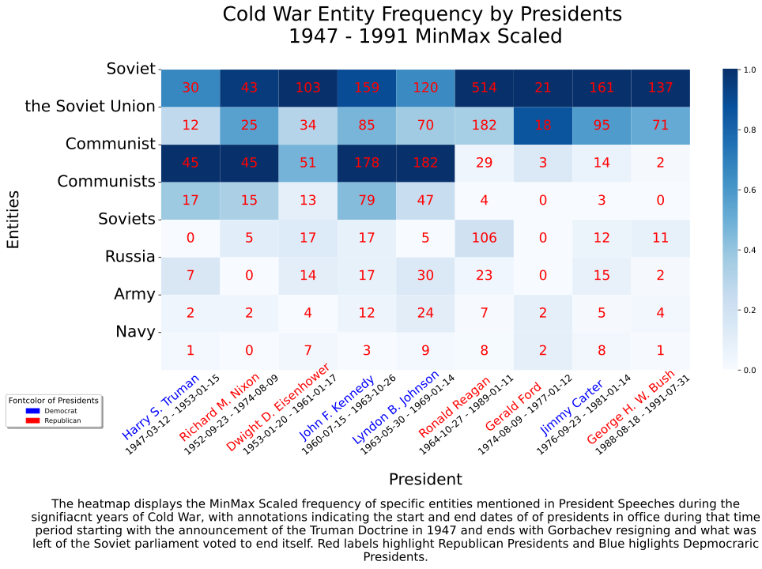
Middle Eastern Occupation Entities Case Study
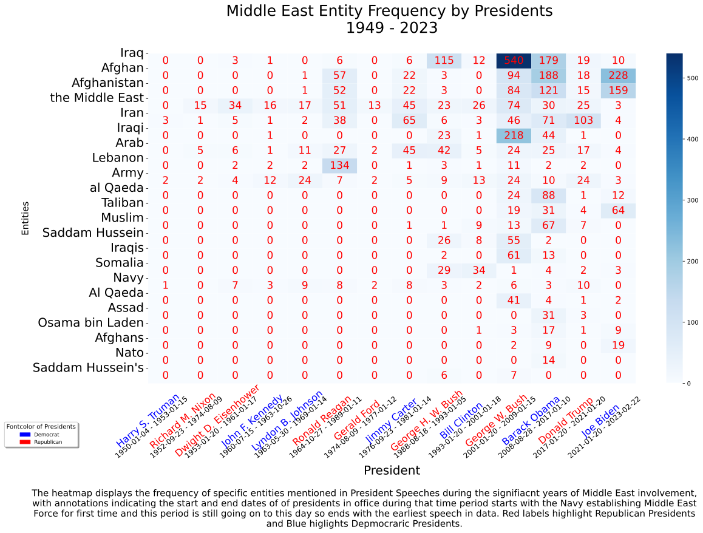
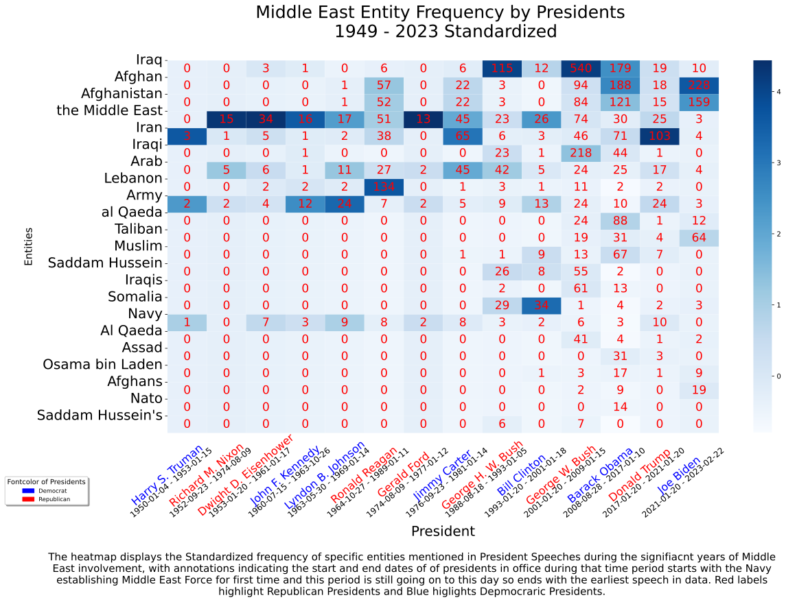

Below, I attempted to create a knowledge map that connects entities based on relationships identified in
presidential speeches, along with calculating the sentiment associated with these connections. This was
achieved using a library called [neuralcoref ]to assess the sentiment of any sentence mentioning two
identified entities. The sentiment scores for all entities mentioned together were averaged for each
relationship. In the visualization, blue connections represent positive sentiments, while red connections
indicate negative sentiments. Additionally, the thickness of the connection lines between entity nodes
signifies the strength of the sentiment: a very thick blue line indicates a strongly positive relationship,
and a very thick red line suggests a strongly negative relationship. The size of each node also reflects the
frequency of the entity's mention in the speeches.
However, the data visualization was unsuccessful due to the excessive number of entities and complex
relationships involving multiple entities. These knowledge maps became too convoluted, with entity nodes and
connections so densely packed that it was difficult to discern individual entity names or resulted in too
many separate visualizations, which diluted any potential understanding of the data. Nevertheless, I present
it here as a testament to the progress and initiative in this research. Acknowledging that failure is part of
the learning process, the visualization below shows just the first 27 entities and their interactions, all
with a sentiment analysis score above 0.25.
Attempt to do Entity Relation Extraction Knowledge Map
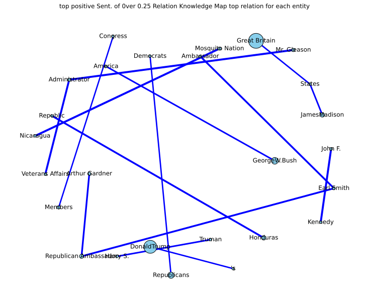
Conclusion
Just as our first research question aimed to examine the mentions of different countries, organizations,
and key figures and their recognition throughout the history of presidential speeches, these
visualizations map out the historical trajectory and evolution observed in the heatmaps. These maps,
with their broad temporal dimension, have revealed the evolution of entities over time, offering a
nuanced perspective on changing geopolitical priorities. Specifically, the heatmaps showcase the
fluctuating popularity of these entities, underscoring their significance to America and its government
throughout history. Notably, if the Entity Relationship Extraction (ERE) data visualizations were
complete, they would likely reveal partisan distinctions in sentiment toward key moments of U.S.
involvement in international affairs. This analysis is conducted through a temporal lens that enhances
our understanding of the sentiment relationships between entities and the U.S.'s views and relationships
with them.
Regarding our second research question—whether there is a difference in the entities mentioned by
presidents and its effect on other entities as well as U.S. foreign policy—these visualizations dissect
differences between presidents, offering insights into how these variations potentially influenced U.S.
relationships with other countries and organizations, especially in case studies concerning World War II,
the Cold War, and Middle Eastern involvements.
Coupled with Nicole Semerano's historical analysis, this research has enriched our understanding of
presidential rhetoric, emphasizing its continuity and illuminating its role in shaping American history
and politics. These findings not only align with prior research but also provide a quantitative lens
through which to interpret the strategic narratives crafted by presidential figures, underscoring the
value of NLP in political science and historical research.
Moreover, the implications extend to the fields of political communication, history, and policy analysis.
By combining data-driven approaches with historical context, this research offers a robust tool for
historians and political scientists to analyze shifts in diplomatic and domestic priorities over time.
Ultimately, this suite of visual tools provides a multidimensional analysis, unraveling the complexities
of political discourse and contributing to a deeper comprehension of the nation's past and present.
present.
Conclusion
1. Semerano, N. (n.d.). A Data-Driven Analysis of Presidential Speeches. Towards Data Science. Available at: https://towardsdatascience.com/analysis-of-presidential-speeches-throughout-american-history-bb088d36d7dd.
2. Semerano, N. (n.d.). Metis-Project-4-Presidential-Speeches-NLP. GitHub. Available at: https://github.com/nicolesemerano/Metis-Project-4-Presidential-Speeches-NLP .
3. Huggingface. (n.d.). neuralcoref. GitHub. Available at: https://github.com/huggingface/neuralcoref .
4. Miller Center. (n.d.). speeches.json. University of Virginia. Available at: https://data.millercenter.org/ .